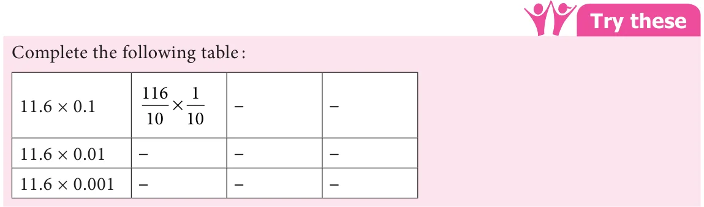

We have already discussed about the multiplication of decimal numbers by 10, 100 and 1000. In the same way we can find patterns for multiplying decimal numbers by 0.1, 0.01 and 0.001. Observe the following.
\(12.3 \times 0.1 = \frac{1231}{1010} \times = \frac{123}{100} = 1.23 12.3 \times 0.01 = \frac{1231}{10100} \times = \frac{123}{1000} = 0.123 12.3 \times 0.001 = \frac{1231}{101000} \times = \frac{123}{10000} = 0.0123\)
From the above multiplication we can conclude that, when multiplying by
- •0.1, the decimal point moves one place left.
- •0.01, the decimal point moves two places left.
- •0.001, the decimal point moves three places left.
Zeros may be added as required when multiplied by 0.1, 0.01 and 0.001 as mentioned above.


- 1.Find the product of the following
- (i)\(0.5 \times 3\) (ii) \(3.75 \times 6\) (iii) \(50.2 \times 4\)
- (iv)\(0.03 \times 9\) (v) \(453.03 \times 7\) (vi) \(4 \times 0.7\)
- 2.Find the area of the parallelogram whose base is 6.8 cm and height is 3.5 cm.
- 3.Find the area of the rectangle whose length is 23.7 cm and breadth is 15.2 cm.
- 4.Multiply the following
- (i)2 57. \(\times 10\) (ii) 0 51. \(\times 10\) (iii) 125 367. \(\times 100\) (iv) 34 51. \(\times 100\)
- (v)62 735. \(\times 100\) (vi) 0 7. \(\times 10\) (vii) 0 03. \(\times 100\) (viii) 0 4. \(\times 1000\)
- 5.A wheel of a baby cycle covers 49.7 cm in one rotation. Find the distance covered in
10 rotations.
- 6.A picture chart costs ₹ 1.50. Radha wants to buy 20 charts to make an album.
How much does she have to pay?
- 7.Find the product of the following.
- (i)3 6. \(\times 0 3\). (ii) 52 3. \(\times 0 1\). (iii) 537 4. \(\times 0 2\).
- (iv)0 6. \(\times 0 06\). (v) 62 2. \(\times 0 23\). (vi) 1 02. \(\times 0 05\).
- (vii)10 05. \(\times 1 05\). (viii) 101 01. \(\times 0 01\). (ix) 100 01. \(\times 1 1\).
Objective type questions
- 8.\(1.07 \times 0.1\) ________
- (i)1.070 (ii) 0.107 (iii) 10.70 (iv) 11.07
- 9.\(2.08 \times 10 =\) ________
- (i)20.8 (ii) 208.0 (iii) 0.208 (iv) 280.0
- 10.A frog jumps 5.3 cm in one jump. The distance travelled by the frog in 10 jumps is
________
- (i)0.53 cm (ii) 530 cm (iii) 53.0 cm (iv) 53.5 cm